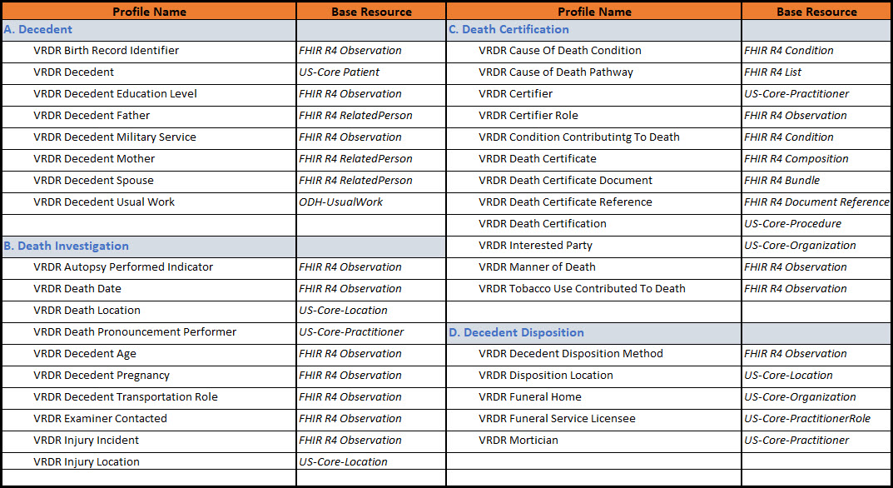

1.2.0 - STU 2 (Post-Ballot, Pre-Publication Draft)
1.2.0 - STU 2 (Post-Ballot, Pre-Publication Draft)
VRDR - Local Development build (v1.2.0). See the Directory of published versions
The VRDR FHIR IG makes use of 33 FHIR Resource Profiles. The content profiles are grouped into 4 profile groups. Each profile group represents an aspect of the data collected on the U.S. Standard Certificate of Death.
A. Decedent Demographics: is a profile group comprised of profiles containing decedent demographic data. Demograhic data includes information about related persons (Mother, Father, and Spouse) and social determinants such as education level and usual occupation. The information in this profile group are provided by a decedent informant.
B. Death Investigation: is a profile group comprised of profiles containing data obtained during the course of investigating a death. Many of these items are conditionally present in a death certification transaction depending on whether or not a autopsy was performed, an injury incident occurred, or a transportation event was involved.
C. Death Certification: is a profile group comprised of profiles containing data related to the primary concern of the VRDR IG, Death Certification. In this group the causes of death and the causal pathway are documented and attested to by a death certifier (coroner or medical examiner).
D. Decedent Disposition: is a profile group comprised of profiles containing data related to the disposition of the decedents remains. The data in this profile group is typically provided by the funeral home performing the disposition services. The content of this profile group is authenticated by the funeral home director.
|  |
IG © 2021+ HL7 Public Health Working Group. Package hl7.fhir.us.vrdr#1.2.0 based on FHIR 4.0.1. Generated 2021-09-22
Links: Table of Contents |
QA Report
| Version History |
Search |
 |
Propose a change
|
Propose a change